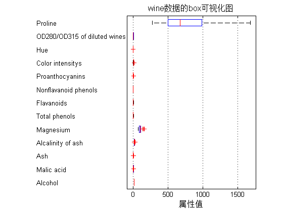
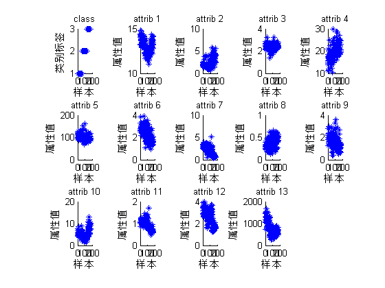
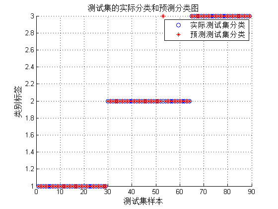

Contents
Matlab神经网络43个案例分析
% 基于SVM的数据分类预测——意大利葡萄酒种类识别 % by 李洋(faruto) % http://www.matlabsky.com % Email:faruto@163.com % http://weibo.com/faruto % http://blog.sina.com.cn/faruto % 2013.01.01
清空环境变量
close all; clear; clc; format compact;
数据提取
% 载入测试数据wine,其中包含的数据为classnumber = 3,wine:178*13的矩阵,wine_labes:178*1的列向量 load chapter_WineClass.mat; % 画出测试数据的box可视化图 figure; boxplot(wine,'orientation','horizontal','labels',categories); title('wine数据的box可视化图','FontSize',12); xlabel('属性值','FontSize',12); grid on; % 画出测试数据的分维可视化图 figure subplot(3,5,1); hold on for run = 1:178 plot(run,wine_labels(run),'*'); end xlabel('样本','FontSize',10); ylabel('类别标签','FontSize',10); title('class','FontSize',10); for run = 2:14 subplot(3,5,run); hold on; str = ['attrib ',num2str(run-1)]; for i = 1:178 plot(i,wine(i,run-1),'*'); end xlabel('样本','FontSize',10); ylabel('属性值','FontSize',10); title(str,'FontSize',10); end % 选定训练集和测试集 % 将第一类的1-30,第二类的60-95,第三类的131-153做为训练集 train_wine = [wine(1:30,:);wine(60:95,:);wine(131:153,:)]; % 相应的训练集的标签也要分离出来 train_wine_labels = [wine_labels(1:30);wine_labels(60:95);wine_labels(131:153)]; % 将第一类的31-59,第二类的96-130,第三类的154-178做为测试集 test_wine = [wine(31:59,:);wine(96:130,:);wine(154:178,:)]; % 相应的测试集的标签也要分离出来 test_wine_labels = [wine_labels(31:59);wine_labels(96:130);wine_labels(154:178)]; 
数据预处理
数据预处理,将训练集和测试集归一化到[0,1]区间
[mtrain,ntrain] = size(train_wine);
[mtest,ntest] = size(test_wine);
dataset = [train_wine;test_wine];
% mapminmax为MATLAB自带的归一化函数
[dataset_scale,ps] = mapminmax(dataset',0,1);
dataset_scale = dataset_scale';
train_wine = dataset_scale(1:mtrain,:);
test_wine = dataset_scale( (mtrain+1):(mtrain+mtest),: );
SVM网络训练
model = svmtrain(train_wine_labels, train_wine, '-c 2 -g 1');
SVM网络预测
[predict_label, accuracy] = svmpredict(test_wine_labels, test_wine, model);
Accuracy = 98.8764% (88/89) (classification)
结果分析
% 测试集的实际分类和预测分类图 % 通过图可以看出只有一个测试样本是被错分的 figure; hold on; plot(test_wine_labels,'o'); plot(predict_label,'r*'); xlabel('测试集样本','FontSize',12); ylabel('类别标签','FontSize',12); legend('实际测试集分类','预测测试集分类'); title('测试集的实际分类和预测分类图','FontSize',12); grid on;